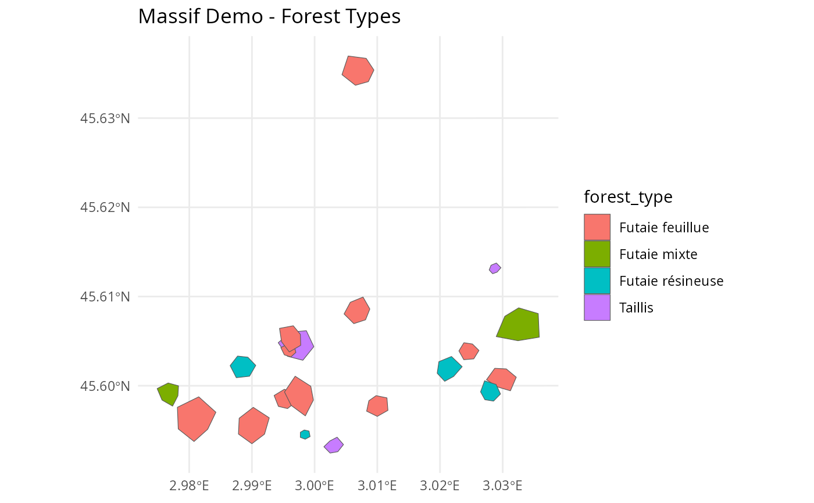

Synthetic forest dataset for demonstrating the nemeton package functionality. Contains 20 forest parcels with associated spatial layers covering a 5km x 5km area in France (Lambert-93 projection).
Format
An sf object with 20 features and 5 fields:
- parcel_id
Character. Unique parcel identifier (P01-P20)
- forest_type
Character. Forest type:
"Futaie feuillue" - Broadleaf high forest
"Futaie résineuse" - Coniferous high forest
"Futaie mixte" - Mixed high forest
"Taillis" - Coppice
- age_class
Character. Stand age class:
"Jeune" - Young (< 40 years)
"Moyen" - Middle-aged (40-80 years)
"Mature" - Mature (80-120 years)
"Surannée" - Over-mature (> 120 years)
- management
Character. Management objective:
"Production" - Timber production
"Conservation" - Biodiversity conservation
"Mixte" - Mixed objectives
- surface_ha
Numeric. Parcel area in hectares
- geometry
sfc_POLYGON. Parcel boundaries (EPSG:2154)
Details
The dataset includes:
**Parcels** (massif_demo_units):
- 20 forest parcels (2-20 ha each, 136 ha total)
- Realistic spatial clustering and irregular shapes
- Diverse forest types and management regimes
**Rasters** (25m resolution, in inst/extdata/):
- massif_demo_biomass.tif: Aboveground biomass (50-400 Mg/ha)
- massif_demo_dem.tif: Digital Elevation Model (350-700m)
- massif_demo_landcover.tif: Land cover (6 classes, 85% forest)
- massif_demo_species_richness.tif: Species richness (5-45 species)
**Vector layers** (in inst/extdata/):
- massif_demo_roads.gpkg: 5 roads (types: Départementale, Forestière, Chemin)
- massif_demo_water.gpkg: 3 water courses (types: Ruisseau, Rivière, Torrent)
All spatial data use Lambert-93 projection (EPSG:2154).
Generated with set.seed(42) for reproducibility.
Data Generation
The dataset was created synthetically to represent typical French forest landscapes: - Biomass: Spatial gradient with patches and noise - Topography: Realistic elevation with gentle slopes - Land cover: Spatially coherent forest/non-forest classes - Species richness: Correlated with biomass and habitat diversity - Infrastructure: Sinuous roads and topography-following streams
Usage
Use massif_demo_layers to load all associated spatial layers:
# Load parcels
data(massif_demo_units)
# Load all layers
layers <- massif_demo_layers()
# Compute indicators
results <- nemeton_compute(massif_demo_units, layers, indicators = "all")Examples
# Load the demo dataset
data(massif_demo_units)
# Inspect parcels
print(massif_demo_units)
#> Simple feature collection with 20 features and 5 fields
#> Geometry type: POLYGON
#> Dimension: XY
#> Bounding box: xmin: 698041.8 ymin: 6499215 xmax: 702793.8 ymax: 6504159
#> Projected CRS: RGF93 v1 / Lambert-93
#> First 10 features:
#> parcel_id forest_type age_class management surface_ha
#> 1 P01 Futaie mixte Mature Mixte 4.989211
#> 2 P02 Futaie résineuse Moyen Production 5.867935
#> 3 P03 Futaie feuillue Surannée Conservation 6.557777
#> 4 P04 Futaie feuillue Surannée Production 9.989553
#> 5 P05 Futaie résineuse Moyen Production 5.906395
#> 6 P06 Futaie résineuse Mature Production 1.048296
#> 7 P07 Futaie feuillue Mature Mixte 17.079363
#> 8 P08 Futaie feuillue Mature Production 11.414577
#> 9 P09 Futaie mixte Moyen Production 16.105209
#> 10 P10 Taillis Surannée Production 10.733433
#> geometry
#> 1 POLYGON ((698299.9 6499928,...
#> 2 POLYGON ((701702.2 6500418,...
#> 3 POLYGON ((702240.4 6500270,...
#> 4 POLYGON ((700641.3 6504129,...
#> 5 POLYGON ((699268.2 6500307,...
#> 6 POLYGON ((699943.5 6499421,...
#> 7 POLYGON ((698500.5 6499360,...
#> 8 POLYGON ((699061.9 6499649,...
#> 9 POLYGON ((702258.5 6500666,...
#> 10 POLYGON ((699897.1 6500739,...
summary(massif_demo_units$surface_ha)
#> Min. 1st Qu. Median Mean 3rd Qu. Max.
#> 1.048 4.047 5.887 6.801 10.149 17.079
table(massif_demo_units$forest_type)
#>
#> Futaie feuillue Futaie mixte Futaie résineuse Taillis
#> 11 2 4 3
# Plot parcels
if (require("ggplot2")) {
ggplot(massif_demo_units) +
geom_sf(aes(fill = forest_type)) +
theme_minimal() +
labs(title = "Massif Demo - Forest Types")
}
#> Loading required package: ggplot2

if (FALSE) { # \dontrun{
# Complete workflow example
library(nemeton)
# 1. Load data
data(massif_demo_units)
layers <- massif_demo_layers()
# 2. Compute all indicators
results <- nemeton_compute(
massif_demo_units,
layers,
indicators = "all",
preprocess = TRUE
)
# 3. Normalize indicators
normalized <- normalize_indicators(
results,
indicators = c("carbon", "biodiversity", "water"),
method = "minmax"
)
# 4. Create ecosystem health index
health <- create_composite_index(
normalized,
indicators = c("carbon_norm", "biodiversity_norm", "water_norm"),
weights = c(0.4, 0.4, 0.2),
name = "ecosystem_health"
)
# 5. Visualize
plot_indicators_map(
health,
indicators = "ecosystem_health",
palette = "RdYlGn",
title = "Ecosystem Health - Massif Demo"
)
} # }